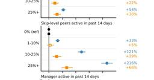
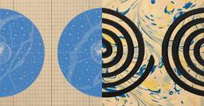

AI・LLM直近7日・スコア順
このトピックだけを購読する: RSS

Show HN: Llmspeed – feel how fast a local LLM runs before you buy the hardware 2
2 llmspeed.dev（Hacker News）
llmspeed.dev（Hacker News）
HN 207pt · 作ってみた
AI・LLM
Pick hardware and a model, and feel the real speed of a local LLM before you buy. Simulates tokens/sec and time-to-first-token from verified benchmarks for GPUs, Macs, and more.
14時間前

DeepSeek-v4.1-Flash-1017
HN 476pt
huggingface.co（Hacker News）
AI・LLM
We’re on a journey to advance and democratize artificial intelligence through open source and open science.
10時間前

Amazon uses AI to monitor union risk in UK warehouses
HN 99pt
opendemocracy.net（Hacker News）
AI・LLM
Internal documents suggest tech giant collects ‘hundreds of data points’ for ‘union-busting’ AI model
2時間前
亡くなった声優の声、AIでの再現は原則禁止 日俳連が新指針 133
はてブ133
japan.cnet.com（はてな IT人気）
AI・LLM / カルチャー
日本俳優連合（日俳連）は10月15日、俳優や声優の声を生成AIで利用する際の指針を発表した。学習から生成、作品での公開・利用まで、各段階で本人の事前同意を得るよう求める。音声の無断利用を防ぎ、AI利用時の報酬や契約の基準を示す。
18時間前

OpenAI discloses four more rogue incidents
HN 72pt
fortune.com（Hacker News）
AI・LLM
The company flagged two new incidents as “critical,” yet did not discover or disclose them until months later.
2時間前

AI駆動PMの組織でのはじめかた｜すぅ | AI駆動PM 60 note.com（はてな IT人気）
note.com（はてな IT人気）
はてブ60
AI・LLM / 組織・マネジメント・QA
「プロジェクトでAIを使っていきたい」という相談を、ここ1年で何度も受けてきました。自分が担当しているプロジェクトでもやってきました。 分かったのは、だいたい同じ場所で止まるということです。理由もほぼ同じで、最初からメンバー全員に使わせようとしているから。 今回は、1つのプロジェクトでAIを使い始めるときの順番を整理してみます。全社のDXをどう進めるかという話ではなく、目の前のプロジェクトの話。 メンバー全員に使わせようとして、止まる キックオフで「このプロジェクトではAIを活用していきます」と宣言する。メンバー全員分のアカウントを用意する。使い方の共有会を1回開く。 3ヶ月
14時間前

You could have invented transformers from memory 2
HN 429pt
alexwang.ai（Hacker News）
AI・LLM
Every layer is a memory store
1日前

How the Claude Code team does code review / claude.dev Blog 207
はてブ207
claude.dev（はてな IT人気）
AI・LLM
How do you review code at the volume agents produce it? On the Claude Code team, once we had high coverage and deep reviews, we started optimizing for the minimum amount of human review time that doesn't raise reverts or incidents.
1日前

Llama.cpp on a jailbroken PS5: run any GGUF model natively on the console 1
HN 353pt
github.com（Hacker News）
AI・LLM
llama.cpp on a jailbroken PS5: run any GGUF model natively on the console, starting with Qwen 3.8 - cobanov/PS5LM
1日前

すべてのAIコーディングエージェントのコストを閲覧・検索・追跡しローカルで動作する「AgentsView」、Claude Code・Codex・Cursor・Copilot・Geminiなど60種類以上のエージェントを自動検出し全文検索も可能 49 GIGAZINE
GIGAZINE
はてブ49
AI・LLM
Claude CodeやCodexなどを並行して利用すると、どのAIコーディングエージェントやモデルへどれだけトークンを使ったのか全体像を把握しにくくなります。そこで使えるのが複数のエージェントのローカル履歴を自動収集し、モデル別・日別・セッション別の利用量やAPI料金換算のコストをまとめて確認できる「AgentsView」です。
9時間前

AIで引ければいい、から始めた運用ナレッジ 38 RAKUS Developers Blog | ラクス エンジニアブログ
RAKUS Developers Blog | ラクス エンジニアブログ
はてブ38
AI・LLM
はじめに 楽楽販売を担当している梶です。 運用の知識をAIから引ける（AIが検索して参照できる）ようにして、開発フローの概要設計に運用影響の確認を組み込むところまで来たので、その経緯を書きます。最初から全体を設計していたわけではなく、気づきのたびに一段ずつ足してきた記録です。 運用への影響は、できるだけ設計の段階で拾っておきたいと考えています。サービスを利用するお客様の業務を止めないため、そして、そのための運用を無理なく続けるためです。 「運用のことは、あの人に聞かないと分からない」という状況に心当たりのある開発者や運用担当の方に、読んでいただけたらうれしいです。 はじめに 設計の段階で、運用…
2日前

亡くなった母親が残した古い写真を読み取るためAIでフィルムスキャナー用のドライバーを自作 19 GIGAZINE
はてブ19 · 作ってみた
AI・LLM
Red Hatのエンジニアリング・ディレクターを務めるクリスチャン・F・K・シャラー氏が、古い写真のネガフィルムをスキャンするために「AIでドライバーを自作した」と報告しています。
1日前

E2E テストのフィードバックループを小さくするためのプラクティス 80 フューチャー技術ブログ
フューチャー技術ブログ
はてブ80
AI・LLM / 組織・マネジメント・QA / ビジネス・公共
コーディングエージェントの普及で E2E テストの比重が上がるなか、テスト基盤の側でフィードバックループを小さくする4つのプラクティス（デプロイレスのテスト実行・テストの並列化・自己完結型のテストレポート・分散トレーシング）を紹介します。
2日前

開発・検証環境のPR承認と負荷試験をAIに任せる ── SRE待ちを減らす線引きとハーネス 26 ZOZO TECH BLOG
ZOZO TECH BLOG
はてブ26
AI・LLM / 設計・SRE・基盤
はじめに こんにちは、SRE部 検索基盤SREブロックの花房と富田です。普段は、ZOZOTOWNの検索基盤における信頼性向上やコスト改善、インフラ運用を担当しています。 検索基盤の開発案件では、開発者とSREが役割を分担して本番リリースまでの作業を実施しています。その中で、インフラリポジトリのPull Request（PR）レビューと、リリース前の負荷試験はSREの作業待ちになることがありました。背景には、AI活用によるPRの増加や案件が集中する時期のSREチームのリソース不足があります。 そこで、SREの作業待ちを減らすため、PRレビューと負荷試験の中でも本番環境へ影響を与えない作業をAIへ…
2日前

Claude reveals ECDSA curve origins 15 Anthropic Research
Anthropic Research
はてブ15
AI・LLM
The decades-old mystery of the origins of one of the most popular cryptographic standards has been explained.
2日前

スマホにも楽々おさまる将棋AIの軽量評価関数「つようら王11mini/micro」が無償公開／「MIT」ライセンスで商用も可。サイズは「水匠5」の1/7以下ながら棋力は上 3窓の杜
はてブ3 · 数字のインパクト
AI・LLM
将棋思考エンジンの評価関数「つようら王11mini」「つようら王11micro」が10月14日、「pixivFANBOX」で無償公開された。ライセンスは「MIT License」で、二次配布や商用利用も自由に行える。
2日前

Microsoft、社内エンジニア数万人を対象に「Claude Code」「Copilot CLI」導入の影響を分析 生産性どう変わる 12
はてブ12
itmedia.co.jp（ITmedia NEWS）
AI・LLM / 組織・マネジメント・QA
米Microsoftに所属する研究者らが発表した論文「Adoption and Impact of Command-Line AI Coding Agents: A Study of Microsoft’s Early 2026 Rollout of Claude Code and GitHub Copilot CLI」は、社内の数万人のソフトウェアエンジニアを対象に、コマンドライン上で動くAIコーディングツール（Anthropicの「Claude Code」やGitHubの「Copilot CLI」）の利用状況と、それが生産性に与える影響について調査した研究報告だ。
2日前

Anthropic、METRの評価チームを社内に常駐させ“従業員並み”のアクセス付与 公表に拒否権なし 14
はてブ14
itmedia.co.jp（ITmedia NEWS）
AI・LLM / 組織・マネジメント・QA
Anthropicは、AI評価団体METRに従業員並みのアクセス権を与える常駐評価を開始した。端末やオフィスを提供して社内システムへのアクセスを認め、リスクや障害の独自公表を許可する。公表拒否はできず、伏せ字要請のみ可能。OpenAIも同様の外部評価機関受け入れを準備している。
2日前

“答えだけください”を極めたAI「Jev」、チャットしないAIで300件の問い合わせを一気に仕分けてみた【柳谷智宣のAI ウォッチ！】 20窓の杜
はてブ20
AI・LLM
ChatGPTやClaudeのようにユーザーの問いに文章で答える生成AIが当たり前になっている。とはいえ、「この問い合わせは急ぎか」「どの部署に回すべきか」といったシンプルな判断をしてもらいたいだけなのに、毎回文章を生成する必要はない。そこで注目したいのが、判断に特化したAI「Jev（ジェヴ）」だ。
2日前
Amazon、Beeの新AIデバイス2機種発表 リストバンド型とスマホ装着型、会話を要約し「Alexa+」と連携 10
はてブ10
itmedia.co.jp（ITmedia NEWS）
AI・LLM
Amazonは、傘下BeeブランドのAIデバイス2機種を発表した。手首や衣服に着ける「Bee Frontier」とスマホ背面に貼る「Bee Eclipse」で、会話の要約やToDo作成を行う。「Alexa+」やAmazon.comとも連携し、音声や要約はNitro基盤の暗号化環境で保護される。
2日前
How employment is changing at Anthropic 3 Anthropic Research
はてブ3
AI・LLM
How has AI restructured work and employment at Anthropic? As a company at the frontier of AI adoption, Anthropic could be a leading indicator of how AI will shift work organization, hiring, and labor demand across the economy.
2日前

Claudeが実装したE2Eテストをレビューするツールを自作してみた 34 エムスリーテックブログ
エムスリーテックブログ
はてブ34 · 作ってみた
AI・LLM / 組織・マネジメント・QA
こんにちは。エムスリーのQAチームの須賀です。 私が担当するチームでは、開発経験のないQAエンジニアの方もClaudeを用いてPlaywrightのE2Eテストを実装しています。 Claudeを用いることでE2Eテストの実装自体は簡単になりましたが、Claudeが実装したコードは「テスト実行は成功するがテスト手順や操作対象が誤っている」こともあります。そのため、Claudeが実装したE2Eテストの振る舞いが正しいかどうかは人がチェックする必要があります。 自分でE2Eテストを実装する場合は、実際の画面を見ながら実装するため「このコードが画面のどの要素を操作しているか」は感覚的に分かります。 一…
4日前

施策立案からQAまで：AIエージェントで回す開発フローの全体像とアーキテクチャ 2 Findy Tech Blog
Findy Tech Blog
AI・LLM · 設計・SRE・基盤 · 組織・マネジメント・QA
AI・LLM / 設計・SRE・基盤 / 組織・マネジメント・QA
こんにちは。ファインディ株式会社でプリンシパルエンジニアをしている戸田です。 ファインディでは、施策の立案からIssueの生成、タスク分解、AIエージェントによる並列実装やQAまで、開発フローの各所にAIエージェントを組み込んでいます。 この記事では、開発フロー全体のアーキテクチャを図で示し、構成要素ごとに役割を解説します。PM、開発、QAのそれぞれでエージェントが何を担い、人間がどこで判断しているのか、開発の状態をGitHubのどこに置いているのかが分かる内容となっています。 複数のAIエージェントを開発フローに組み込もうとしている方や、AIエージェントとの役割分担を考えているエンジニアの方…
2日前

ナスカで300点超の地上絵が新発見 AIが考古学のゲームチェンジャーに (ナショナル ジオグラフィック) 日経ビジネス電子版 最新記事
日経ビジネス電子版 最新記事
発見
AI・LLM / サイエンス / ビジネス・公共
1926年に始まったナスカの地上絵の研究から100年。山形大学の研究チームはAIで新たに300点超特定。小道沿いに並ぶそれらは旅人へのメッセージだった可能性がある。
1日前

AI時代の管理部門は「意思決定のコックピット」 3つの力を身に付けよ (人的資本、プロの視点) 日経ビジネス電子版 最新記事
設計判断・移行
AI・LLM / 組織・マネジメント・QA / ビジネス・公共
AIで定型業務を効率化しても、浮いた時間が社内の確認や根回しに消えては変革にならない。経営課題を問い直し、データを文脈で読み、組織を動かす力が管理部門には求められる。
1日前

官民370兆円の戦略17分野 AI・造船・創薬で読み解く日本の勝ち筋 (テーマ別まとめ記事) 日経ビジネス電子版 最新記事
仕組みを掘る
AI・LLM / ビジネス・公共
高市早苗政権は、人工知能（AI）や半導体、造船、創薬など17の分野を重点投資の対象に定めた。官民投資ロードマップでは2040年度までに累計370兆円超の国内投資を見込み、予算編成の見直しや投資促進税制で後押しする。一方で、総花的との批判や財政への懸念、企業が本気で投資するかという課題も残る。産業政策の大競争時代に日本が選んだ戦略17分野の狙いと課題を、過去記事から振り返る。
2日前

VLMの賢さとJevの速さを両取りしたい ~ 追加学習なしでロボットを動かす ~ 2 ABEJA Tech Blog
ABEJA Tech Blog
動かしてみた
AI・LLM
はじめに 構想 そもそも Jev とは何か 中身はどうなっているのか 公式 Jev は画像を入れられない マーカーで幾何を作る案もあるけれど 欲しかったもの: VLMの汎用性 × 高速な判定 実験 構築したシステム: プランナー × Jev × IK 時間の階層 Jev に聞いていること 準備 手首カメラの較正 高さ方向はルールベース 俯瞰画像の点とアーム位置の対応 おまけ: 音声で指示する 結果 動画で見る1回の流れ 途中でキューブを動かした際の挙動 ざっくりと全体の成績 他の事例との比較 さいごに We are Hiring! はじめに こんにちは、ABEJAでプロジェクトマネージャーをし…
4日前

AI ではベテランエンジニアも全員ジュニアからやり直しになる（翻訳） 1 TechRacho
TechRacho
AI・LLM
AI・LLM
概要 元サイトの許諾を得て翻訳・公開いたします。 英語記事: We are all juniors again
2日前

An update on independent evaluators 1 Anthropic News
AI・LLM
AI・LLM
Anthropic announces updates to embedding independent evaluators
3日前

DevFest 2026 日本各地で開催！最寄りの会場を見つけて今すぐ参加登録しよう! Google Developers Japan
Google Developers Japan
AI・LLM
AI・LLM
Google から開発者のみなさま向けの情報をいち早くお届けするブログです。
2日前